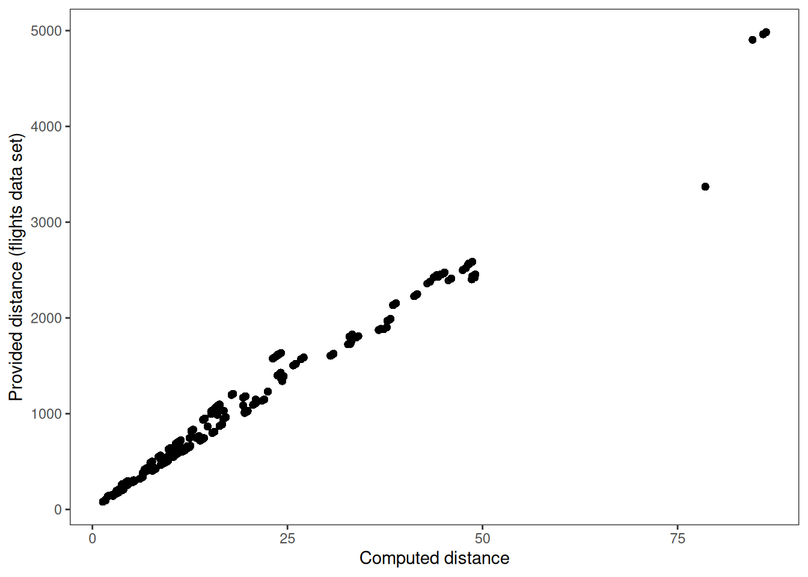

# Print first 5 rows of flightsknitr::kable(dbGetQuery(conn, "SELECT * FROM flights LIMIT 5;"))
year
month
day
dep_time
sched_dep_time
dep_delay
arr_time
sched_arr_time
arr_delay
carrier
flight
tailnum
origin
dest
air_time
distance
hour
minute
time_hour
2023
1
1
1
2038
203
328
3
205
UA
628
N25201
EWR
SMF
367
2500
20
38
2023-01-01 20:00:00
2023
1
1
18
2300
78
228
135
53
DL
393
N830DN
JFK
ATL
108
760
23
0
2023-01-01 23:00:00
2023
1
1
31
2344
47
500
426
34
B6
371
N807JB
JFK
BQN
190
1576
23
44
2023-01-01 23:00:00
2023
1
1
33
2140
173
238
2352
166
B6
1053
N265JB
JFK
CHS
108
636
21
40
2023-01-01 21:00:00
2023
1
1
36
2048
228
223
2252
211
UA
219
N17730
EWR
DTW
80
488
20
48
2023-01-01 20:00:00
Some basic summary statistics
Number of recorded flights
knitr::kable(dbGetQuery(conn, "SELECT COUNT(*) FROM flights"))
count_star()
435352
Five most popular routes
query <-" SELECT origin, dest, COUNT(*) as count FROM flights GROUP BY origin, dest ORDER BY -count LIMIT 5"knitr::kable(dbGetQuery(conn, query))
origin
dest
count
JFK
LAX
10045
LGA
ORD
9923
LGA
BOS
8217
LGA
ATL
7883
JFK
SFO
7440
Carriers with longest departure and arrival delays
query <-" SELECT carrier, AVG(dep_delay) as avg_dep_delay FROM flights GROUP BY carrier ORDER BY -avg_dep_delay LIMIT 3"knitr::kable(dbGetQuery(conn, query))
carrier
avg_dep_delay
F9
35.74138
B6
23.77775
HA
22.85440
query <-" SELECT carrier, AVG(arr_delay) as avg_arr_delay FROM flights GROUP BY carrier ORDER BY -avg_arr_delay LIMIT 3"knitr::kable(dbGetQuery(conn, query))
carrier
avg_arr_delay
F9
26.24384
HA
21.41436
B6
15.61291
Create a table of (approximate) distances between airports
I wanted to investigate the relationship between the distance between the origin and destination airports and the flight’s departure delay. To do this, I could have used the distance column in the flights table, however, to have some more fun with SQL table joins, I decided to compute an approximate distance myself, using the data in the airports table.
I created a table with approximate flight distances by cross-joining the airports table on itself and computing the Euclidean distances between points at given latitude and longitude:
query <-"CREATE TABLE distances AS SELECT a.faa as origin, b.faa as dest, a.name as origin_name, b.name as dest_name, SQRT((a.lat - b.lat) ** 2 + (a.lon - b.lon) ** 2) as dist, FROM airports a CROSS JOIN airports b WHERE dist > 0"dbExecute(conn, query)
[1] 1573770
(Euclidean distance between two latitude-longitude points is only approximate, since it does not take into account Earth’s curvature. However, since all airports are in the US the approximation should be decent. If we wanted more precision, we could use e.g. the Haversine distance formula)
Check if computed distance matches distance in data
I checked the computed distance (dist) against the distance given in the flights table:
query <-" SELECT distance, dist FROM flights a JOIN distances b ON a.origin = b.origin AND a.dest = b.dest "distance_df <-dbGetQuery(conn, query)library(ggplot2)theme_set(theme_bw() +theme(panel.grid =element_blank()))ggplot(distance_df, aes(dist, distance)) +geom_point(alpha =0.5) +labs(x ="Computed distance", y ="Provided distance (flights data set)")

My computed distance seemd to match the given distance fairly closely, although there were some deviations. These could be attributable curvature, to the flights’ deviation from straight-line path, or other factors.
Print the top 5 longest flight paths
knitr::kable(dbGetQuery(conn, "SELECT * FROM distances ORDER BY -dist LIMIT 5"))
origin
dest
origin_name
dest_name
dist
ADK
SYA
Adak Airport
Eareckson Air Station
350.7610
SYA
ADK
Eareckson Air Station
Adak Airport
350.7610
AKB
SYA
Atka Airport
Eareckson Air Station
348.3203
SYA
AKB
Eareckson Air Station
Atka Airport
348.3203
SYA
GAM
Eareckson Air Station
Gambell Airport
346.0236
Print the top 5 shortest flight paths
knitr::kable(dbGetQuery(conn, "SELECT * FROM distances ORDER BY dist LIMIT 5"))
origin
dest
origin_name
dest_name
dist
ELP
BIF
El Paso International Airport
Biggs Army Air Field (Fort Bliss)
0.0423484
BIF
ELP
Biggs Army Air Field (Fort Bliss)
El Paso International Airport
0.0423484
NZY
SAN
North Island Naval Air Station-Halsey Field
San Diego International Airport
0.0425220
SAN
NZY
San Diego International Airport
North Island Naval Air Station-Halsey Field
0.0425220
EDF
MRI
Elmendorf Air Force Base
Merrill Field
0.0526706
Relationship between average departure delay and flight path distance
I wanted to investigate whether there was a relationship between average departure delay and (approximate) distance between the origin and destination airports. I obtained the appropriate data by running the following query:
query <-" SELECT a.origin, a.dest, dist, count, avg_dep_delay FROM (SELECT origin, dest, COUNT(*) as count, AVG(dep_delay) as avg_dep_delay FROM flights GROUP BY origin, dest ORDER BY -avg_dep_delay ) a JOIN distances b ON a.origin = b.origin AND a.dest = b.dest"delay_by_distance <-dbGetQuery(conn, query)
To investigate the relationship between distance and average departure delay, I plotted the data as a scatterplot using the ggplot package. I also computed a custom smoothed weighted regression fit (using the number of flights as the weighting variable) and plotted that as well (the corresponding R code can be displayed by clicking the link below):
There did seem to be a trend for flights to have longer delays as the distance between the origin and desitnation got larger, up to a certain point (about 25 degrees), after which the delays seem to start to decrease again. There were also few outliers. For instance, the flights between La Guardia Airport (LGA) and Eagle County Regional Airport (EGE) tended to have significantly longer average delays than would be expected.